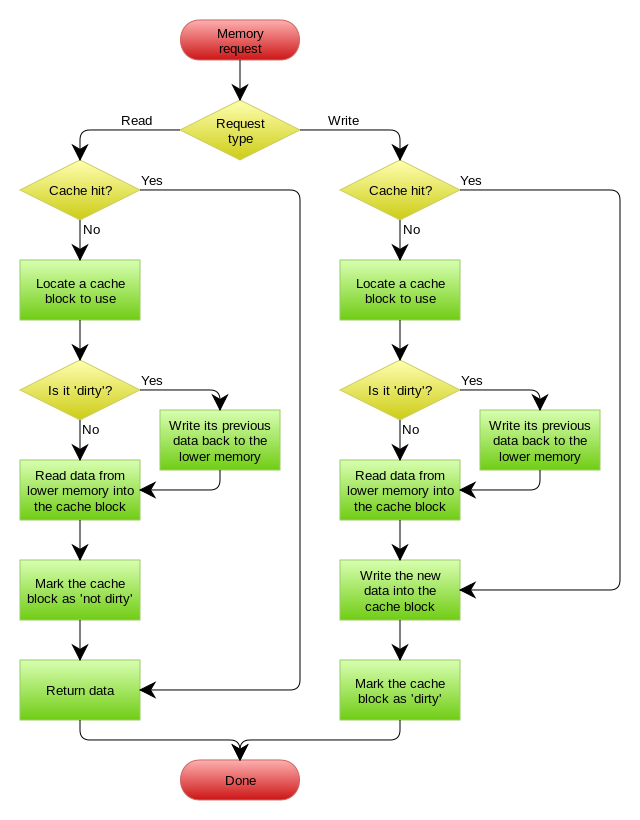

缓存(cache)利用是空间局部性(Locality of reference)：最近被访问的元素很有可能在将来也被访问，从而将结果缓存起来，避免更加耗时的查询（例如，数据库的查询操作，网页图片，网页格式的加载等）。
本文主要讲对数据库查询的缓存。
缓存的核心概念
存活时间（TTL，Time To Live）
缓存里面的每条记录都有一个存活时间，当超过存活时间，缓存就会失效。
逐出策略(Eviction Policy)
当某个时间点，缓存满了，而且里面的记录还没有超过存活时间。这时候，需要逐出缓存里面的一些记录, 腾出空间来容纳新的记录，使得留下的记录在将来更有可能被访问。这时候，就需要缓存的逐出策略。
LRU (Least Recently Used)
LRU是最近最少使用，当缓存满了，会先移除缓存中最近最少使用的记录。
LFU (Least Frequently Used)
LFU是最少频繁使用，它会保存缓存中每条记录被访问的次数，优先移除访问次数最少的记录。
MRU (Most Recently Used)
MRU是最近最多使用，当缓存满了，会先移除缓存中最近使用最多的记录。
缓存更新的策略
Write Through Cache
策略：每次数据的更新，都是同时写到缓存和数据库。
这样的优点是保持了数据库和缓存数据的同步，每次读缓存都能读到最近的数据。缺点是增加了系统进行更新操作的时间。
这个策略不适用于更新操作频繁的系统。适用于一旦写入数据库，需要重复读取数据的系统。
下面是维基百科的图示。
Write Back Cache
策略：每次数据的更新，先写到缓存，然后启动异步任务，定时将缓存中被修改的数据同步到数据库。
这个策略没有Write Through Cache的缺点。因为每次的更新操作都是只是更新缓存，更新的速度会加快，而且，因为是批量更新数据库，从而更新数据库的效率会提高。
缺点是，这会导致数据库和缓存的数据存在迟延，如果缓存挂了，会导致数据丢失。

Write Around
这是最常用的策略了。
策略：每次数据的更新，先把数据存到数据库中，成功后，再让缓存失效。
在这里，为什么不是写完数据库后更新缓存？这主要是怕两个并发的写操作导致脏数据。
| 更新操作A | 更新操作B | |
|---|---|---|
| T1 | 数据库: set a = 1 | |
| T2 | 数据库: set a=2 | |
| T3 | 缓存：set a = 2 | |
| T4 | 缓存：set a = 1 |
可以看到，更新操作A，最终将缓存的值和数据库的实际值不对应，这属于将错误的值加载入缓存。